7Ideas · Vertical Salud
Tecnología que acompaña la atención
Soluciones digitales para ordenar la operación de la institución y acompañar al paciente antes, durante y después de cada consulta.
Qué une a la suite
Cada solución resuelve un momento concreto. Juntas, ordenan el recorrido completo del paciente.
-
Ordenar la operación
Agenda, disponibilidad y sala de espera gestionadas con las reglas de cada institución.
-
Reducir fricción para el paciente
Reservar, preparar la consulta y saber cuándo pasar, desde el celular o por WhatsApp.
-
Dar visibilidad al equipo
Recepción y profesionales ven en qué etapa está cada paciente, sin llamadas ni planillas.
Soluciones principales
Cuatro soluciones para los momentos de mayor carga de la atención: pedir un turno, llegar preparado y ser llamado a tiempo.
Paciente · Recepción · Agenda
Turnos Online
El paciente reserva por su cuenta y la recepción administra la misma agenda. Una sola fuente de disponibilidad para ambos lados.
- Reserva guiada en siete pasos Especialidad, profesional, cobertura, tipo de consulta y horario, con el primer turno libre a un toque.
- Agenda por profesional Disponibilidad semanal, excepciones, bloqueos y reprogramación desde un mismo panel.
- Lista de espera activa Cuando se libera un horario, la recepción se lo ofrece a quien lo estaba esperando.
Detalles de la demo
- Usuarios
- Pacientes, recepción y administración.
- Qué demuestra
- El paciente elige especialidad, profesional, cobertura y horario; la institución administra la agenda.
- Cómo se adapta
- Disponibilidad, excepciones, bloqueos, tipos de consulta y datos requeridos por institución.
- Simulado
- Los turnos se guardan en el navegador (localStorage). No hay backend.
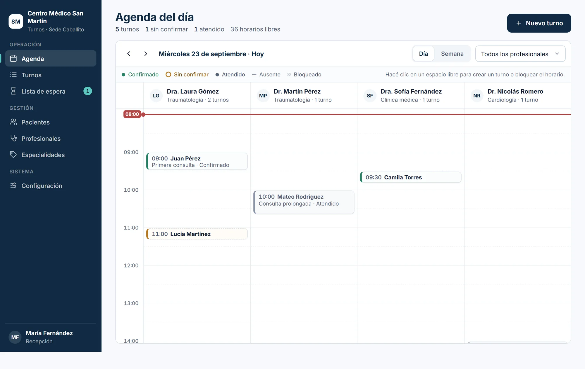
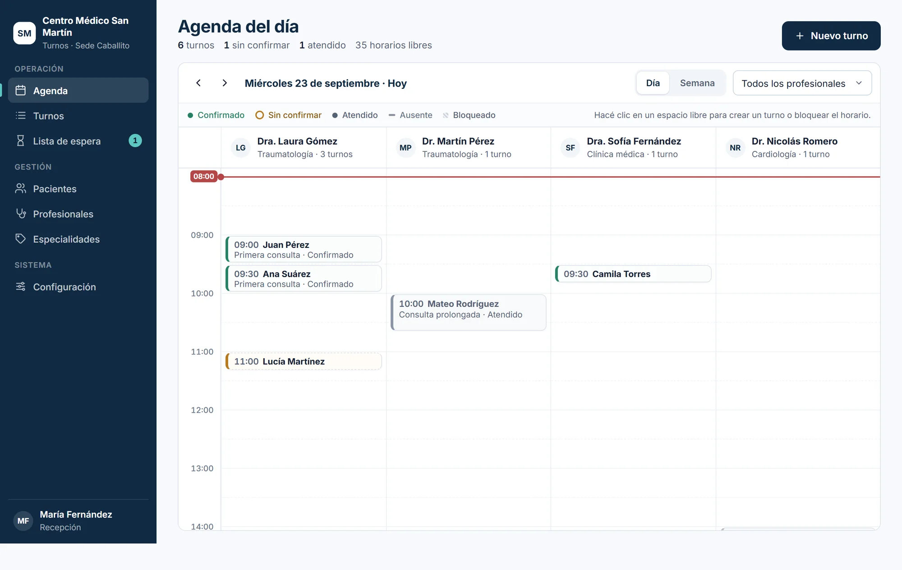
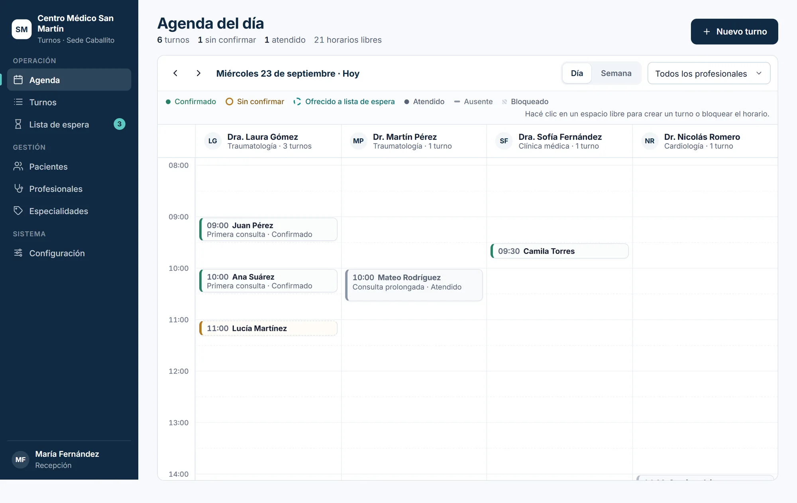
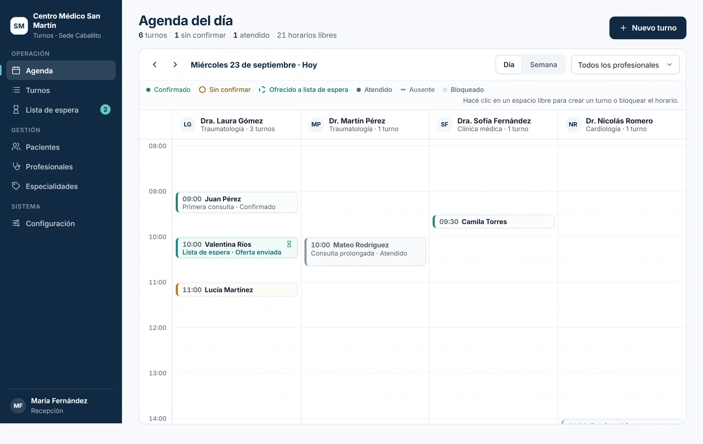
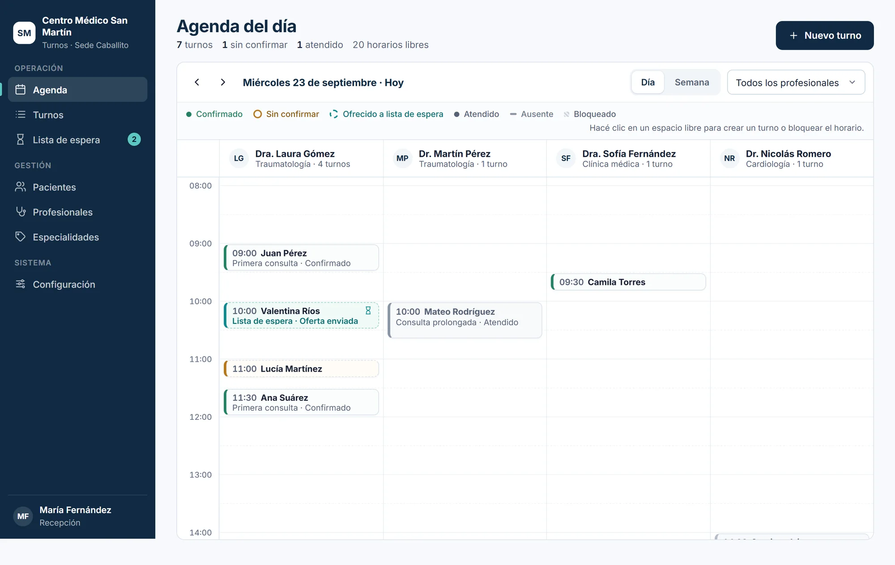
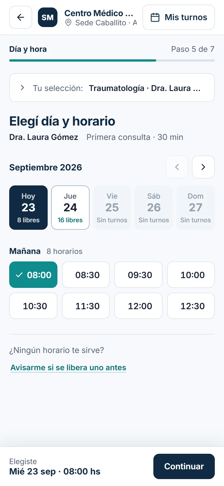
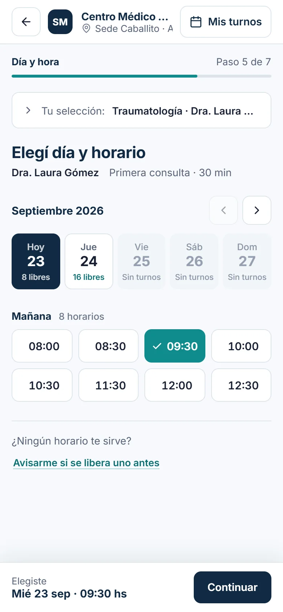
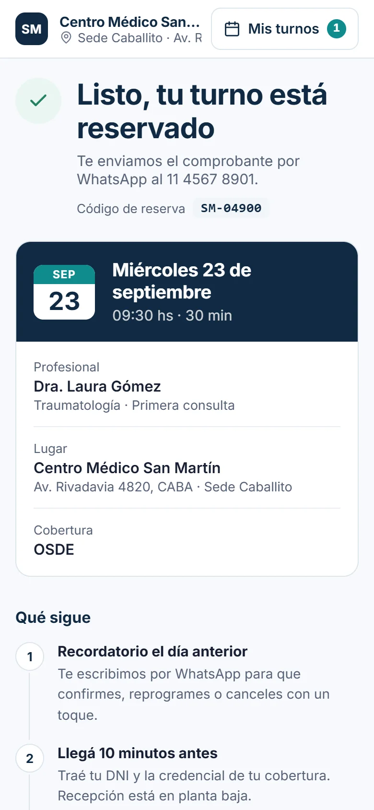

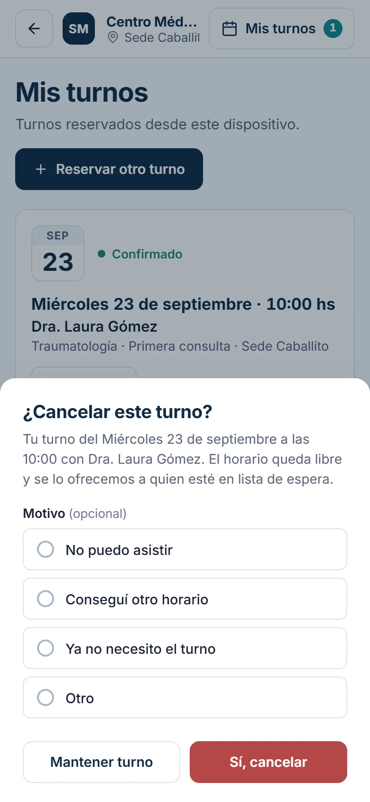
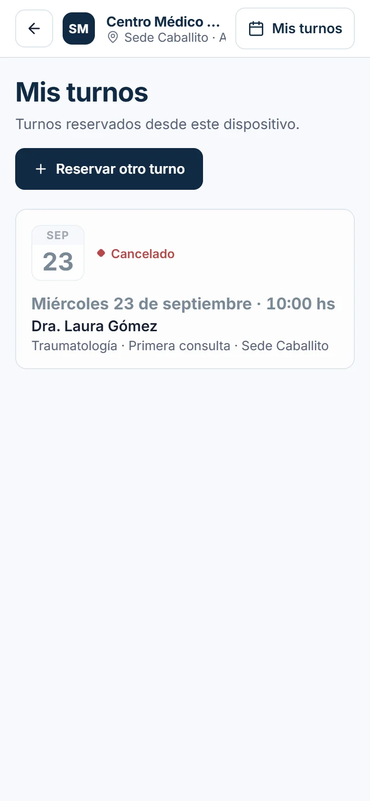
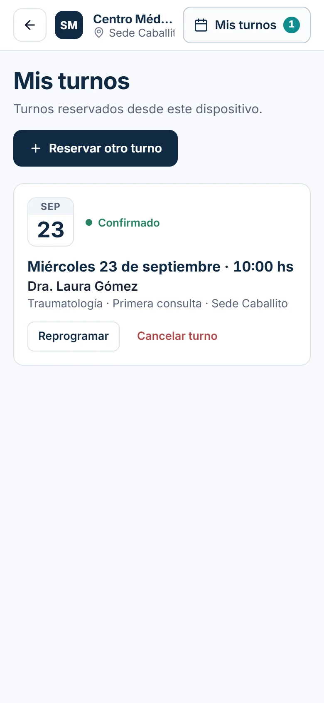
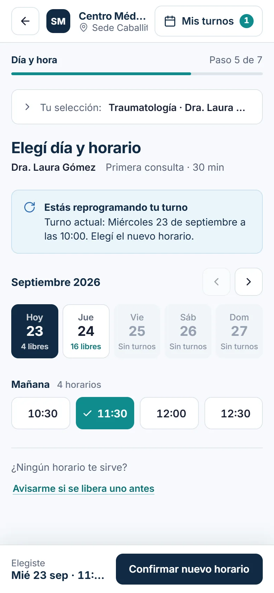
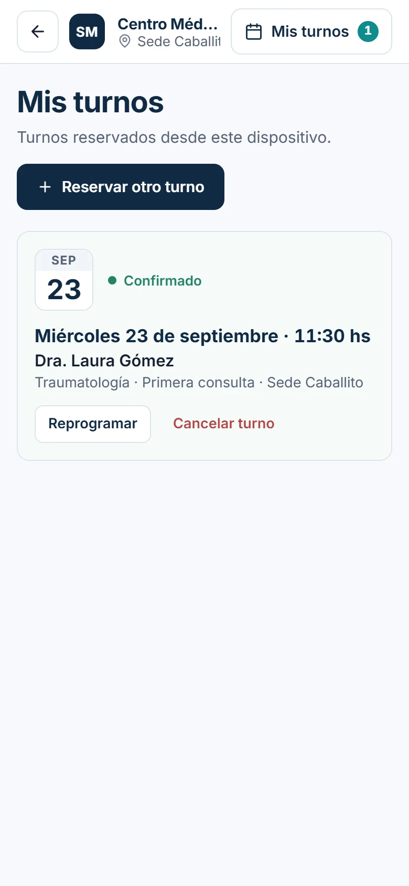
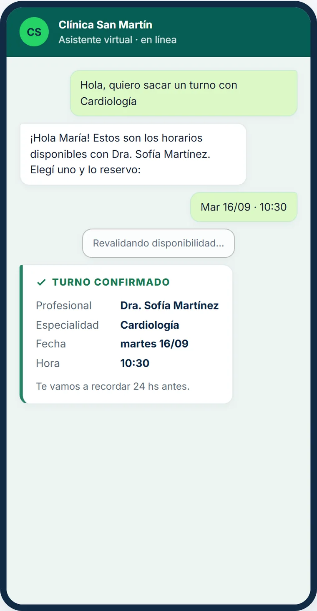
WhatsApp · Motor de agenda
Turnos por WhatsApp
El paciente pide, cambia o cancela su turno en el canal que ya usa. La conversación está conectada a la misma agenda de la institución.
- El paciente escribe con sus palabras, sin menús ni formularios.
- La IA interpreta el pedido y el motor de agenda busca horarios reales.
- Se revalida antes de reservar y el turno queda confirmado con recordatorio.
- Si hace falta, pasa a una persona del equipo, con la conversación a la vista.
Detalles de la demo
- Usuarios
- Paciente y personal de la institución.
- Qué demuestra
- La IA interpreta; el motor valida disponibilidad y revalida antes de reservar; hay derivación a un operador.
- Cómo se adapta
- Automatizaciones activables y reglas de agenda de cada institución.
- Simulado
- API de WhatsApp, agenda y motor de turnos. La conversación es un guion.
Pre-atención · Paciente y recepción
Onboarding de pacientes
El paciente completa sus datos y documentación antes de llegar. La recepción sabe quién está listo para atender y a quién le falta algo.
- Datos personales
- Cobertura
- Antecedentes
- Documentación
Cada institución define qué secciones y documentos pide según el tipo de atención.
Detalles de la demo
- Usuarios
- Paciente y recepción.
- Qué demuestra
- La institución elige una plantilla y el flujo del paciente se adapta.
- Cómo se adapta
- Secciones y documentos requeridos por tipo de atención.
- Simulado
- Carga de archivos y envío de datos. No reemplaza la historia clínica.
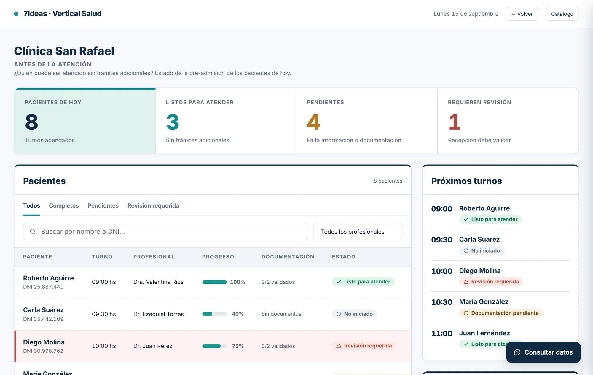
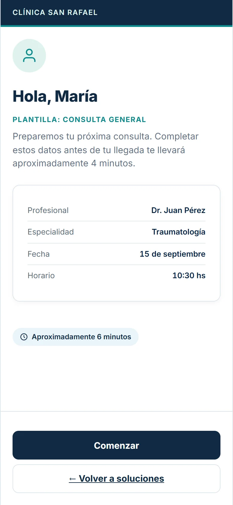
Recepción · Profesionales · Sala de espera
Llamador de pacientes
El profesional llama desde su consultorio y la sala lo ve al instante. La recepción ordena la cola sin levantar la voz ni salir del mostrador.
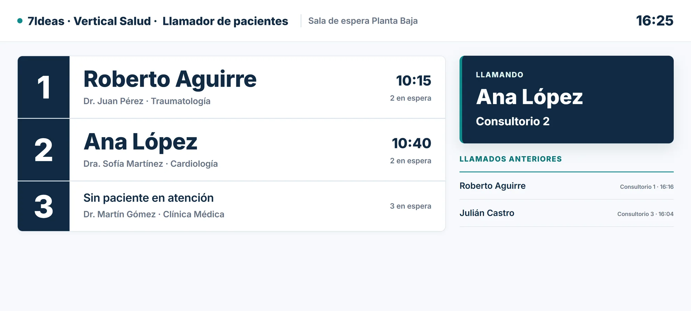
- RecepciónOrdena la cola por consultorio y ve quién está esperando.
- ProfesionalLlama al siguiente desde el panel o su celular, y puede volver a llamar.
- Sala de esperaLa pantalla muestra el llamado con nombre, iniciales o número, según la privacidad elegida.
Detalles de la demo
- Usuarios
- Recepción, profesionales y pacientes en sala.
- Qué demuestra
- Panel, app del profesional y pantalla de sala sincronizados en vivo.
- Cómo se adapta
- Privacidad del llamado (nombre, iniciales o número), consultorios y sonido.
- Simulado
- La sincronización usa localStorage entre pestañas, sin servidor en tiempo real.
Capacidades complementarias
Lo que completa la experiencia
Módulos que suman valor sobre las soluciones principales. Distinto grado de madurez: lo indicamos en cada uno.
-
Solución digital
Portal del paciente
Un solo acceso del paciente a sus turnos, estudios, documentos y avisos de la institución.
Ver demoDetalles de la demo
- Qué demuestra
- Un acceso unificado a servicios que pueden venir de distintos sistemas.
- Cómo se adapta
- Los módulos visibles dependen de las soluciones que use la institución.
- Simulado
- No se integra con Horus ni Osiris. Datos ficticios.
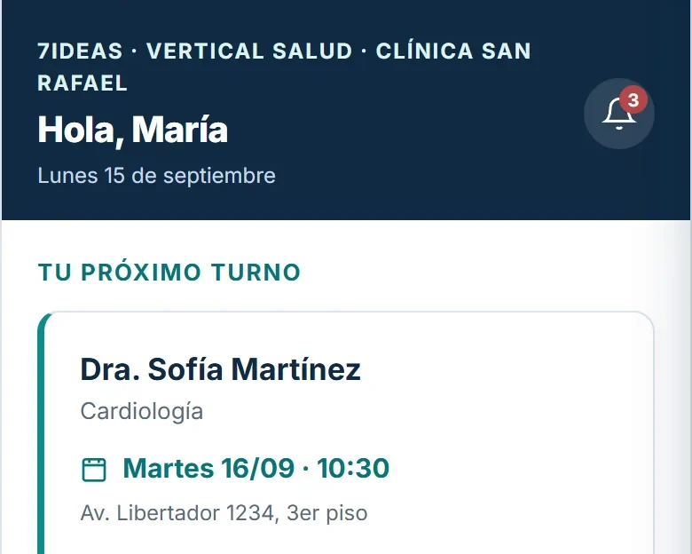
-
Capacidad transversal
Asistente IA
Preguntas en lenguaje natural sobre pacientes, turnos y documentación. No diagnostica ni recomienda tratamientos.
Ver demoDetalles de la demo
- Qué demuestra
- Preguntas sobre pacientes, turnos y documentación. No diagnostica ni recomienda tratamientos.
- Cómo se adapta
- Consulta las fuentes de información a las que la institución decida conectarlo.
- Simulado
- No usa un modelo real: responde con reglas sobre datos de ejemplo.
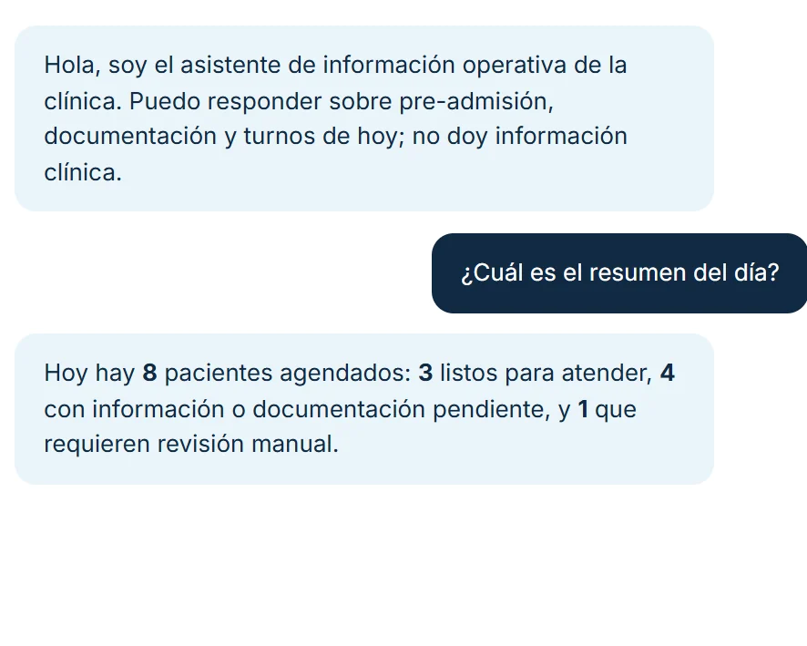
-
Concepto exploratorio
Triage
Evaluación inicial y orden de la cola con reglas definidas y validadas por la institución. Siempre con revisión profesional.
Ver demoDetalles de la demo
- Qué demuestra
- Un motor que ordena la cola con prioridad orientativa; siempre hay revisión profesional.
- Cómo se adapta
- Reglas y contacto de emergencia definidos por cada institución.
- Simulado
- Las reglas son ilustrativas, no un protocolo clínico validado. Etapa conceptual.
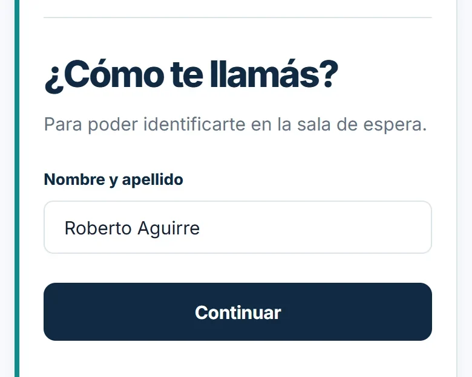
Cómo se integra
Un recorrido conectado, de la reserva al seguimiento
Cada solución funciona por separado o conectada a los sistemas que la institución ya usa.
-
Turnos
Turnos OnlineTurnos por WhatsApp
El paciente reserva, confirma o reprograma.
-
Preparación
Datos y documentación completos antes de llegar.
-
Llegada
Sala de espera ordenada y llamado visible.
-
Atención
Horus / sistema clínico
Sistema de la institución. Fuera del alcance de estas demos.
-
Post-atención
Turnos, estudios y avisos en un solo lugar.
Asistente IA Capacidad transversal: consulta información operativa en cualquier etapa. Ver demo